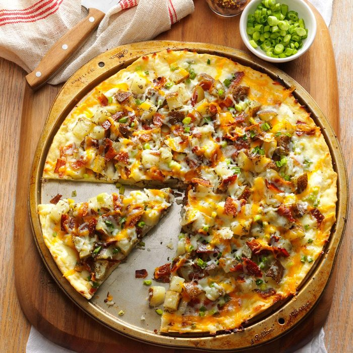

Crepioca Recipe

Baked Potato Pizza
Easy to prepare and you can eat up the leftovers the rest of the week
Ingredients
- 1 Package (6 ounces) pizza crust mix
- 3 medium unpeeled potatoes, baked and cooled
- 1 tablespoon butter, melted
- 1/4 teaspoon garlic powder
- 1/4 teaspoon Italian seasoning or dried oregano
- 1 cup sour cream
- 6 bacon strips, cooked and crumbled
3 to 5 green onions, chopped
1-1/2 cups shredded mozzarella cheese
1/2 cup shredded cheddar cheese
Steps
- Prepare crust according to package directions. Press dough into a lightly greased 14-in. pizza pan;
build up edges slightly. Bake at 400º for 5-6 minutes or until crust is firm and begins to brown.
- Cut potatoes into 1/2-in cubes. In a bowl, combine butter, garlic powder and Italian seasoning. Add potatoes
and toss. Spread sour cream over crust; top with potato mixture, bacon, onions and cheeses. Bake at 400º for 15-20 minutes
or until cheese is lightly browned. Let stand for 5 minutes before cutting
Nutrition Facts
1 slice: 320 calories, 16g fat (9g saturated fat), 51mg cholesterol, 347mg sodium, 31g carbohydrate (3g sugars, 2g fiber), 12g protein.